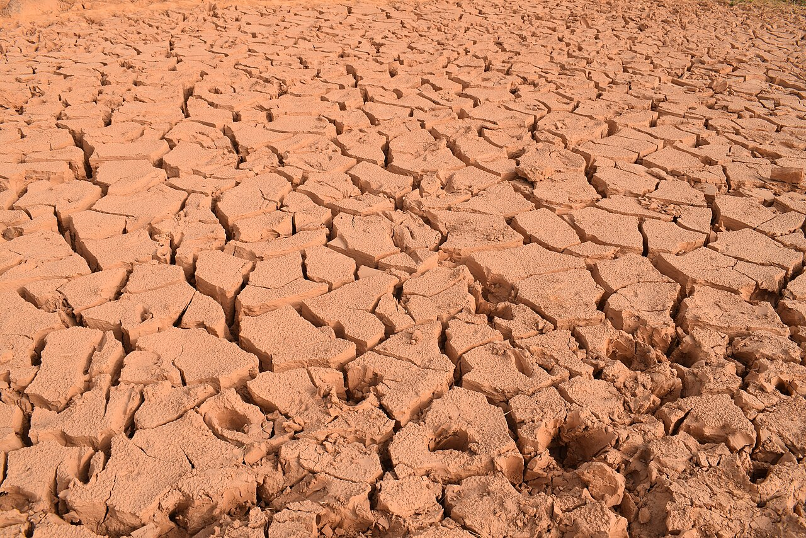

The Worldwide Loss of Soil Moisture

Date: Wednesday, June 10 — 12:00–1:30 PM (Eastern Time)
According to a recent study, the world lost 2,623 gigatonnes of soil moisture between 2000 and 2016.
One gigatonne equals one cubic kilometer of water. The scale of this loss is almost impossible to imagine.
As soils dry out, soil organisms die, rainfall runs off instead of soaking in, floods worsen, and droughts intensify. Yet this critical issue receives almost no public attention.
This webinar explores why soil moisture is disappearing and how restoring living soils could help stabilize climate, reduce flooding, and improve food and water security.
What You Will Learn
- The scale of global soil moisture loss
- Why soils are losing water so rapidly
- How natural freshwater cycles are being disrupted
- How healthier soil can store dramatically more water
- How farmers, foresters, and homeowners can help reverse the trend
Who Should Attend
Anyone interested in climate, food systems, water systems, or ecological restoration.
Recording
A recording will be available to everyone who registers.